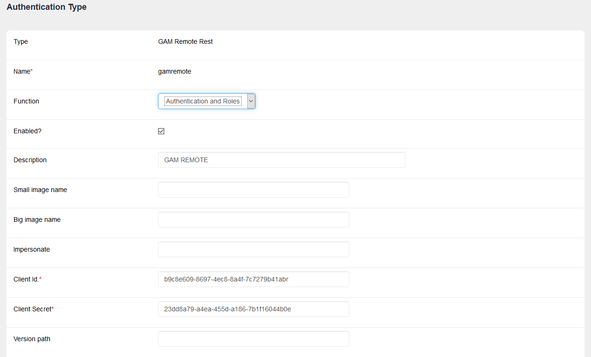
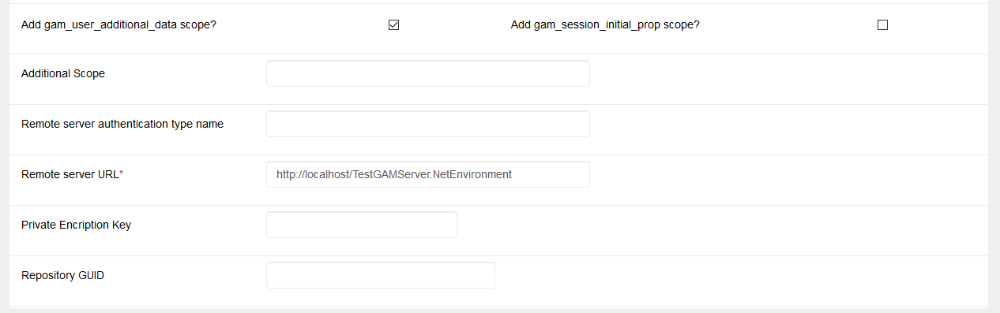

In GAM Remote Rest Authentication type (Oauth 2.0), you must consider following some configuration steps at both the GAM of the clients and at the Identity Provider.
Below is the client-side configuration.
Configure a GAM Remote Rest Authentication type.

- Function. Possible values are "Only Authentication" and "Authentication and roles". The latter means that user roles will be sent from the IDP to the client. The roles must be defined in the client as well as in the server, bearing in mind that the External Id has to be the same at the client and at the server. The criteria is the same as the one used in Managing Roles in applications using SSO.
- Client Id and Client secret. The client Id and Client secret must be the same as the ones configured in the GAM Application at the server.
- Version path. It indicates the version of the services to be called for solving the authentication. By default (if not set) it will be v2.0. You may need to configure GAM Remote Rest authentication type against an Identity Provider of a previous version (prior to GeneXus 16 upgrade 7). In such case, set v1.0 to this property, and the previous version - services (ServerUR/oauth/gam/accesstoken) will be called instead of the latest ($ServerURL/oauth/gam/v2.0/access_token).
The client application may request more information from the authenticated user. To that end, there are two scopes:
- Add gam_user_additional_data. Requests the user's extended attributes to the Identity Provider (IDP).
- Add gam_session_initial_prop. Allows you to ask the Identity Provider for the properties set when the user started the session (see Howto: sending and receiving properties set at the login). In order to successfully obtain this information, you will have to configure, in the IDP, that these scopes are shared with the client application.
- Additional scope. Scope to be sent to the IDP to get additional information on the user.
The way of assessing these scopes is to do a procedure and subscribe it to the GAM Repository_Login event (GAM Events subscription).
The initial_properties may also be assessed in that event.
- Remote Server authentication type name. Name of the authentication type in the IDP. By default it is the Default Authentication Type property of the IDP.
- Remote server URL. Identity Provider's URL. It's the base URL, e.g: http://<server>/<Base_URL>
- Private encryption key. The call among Rest services may be encrypted. The same key must be configured in the IDP and in the client (this only works in v2.0 of the rest service implementation).
- RepositoryGUID. Specifies the repository GUID in the IDP. It is necessary only if the IDP GAM is multitenant.
|